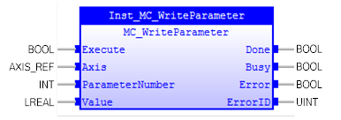

MC_WriteParameter
Writes a value to the specified non-BOOL axis’ parameter.

Description:
This function block writes the value to a specified
parameter. The data type of the ‘Value’ input is LREAL even if the parameter is
a different data type, such as LREAL, DINT, LINT, REAL. This function block
cannot write the parameter which the data type is Boolean. It must be written
with
MC_WriteBoolParameter
.
With a rising edge of ‘Execute’, ‘Value’ will be
successfully written to the specified parameter if no error occurs. This
Function Block does not affect the PLCopen machine state. It can work in any
states.
Make sure the input and output parameters are of data type
indicated in the table below.
Use
MC_WriteBoolParameter
for axis’s parameters of data type BOOL.
Inputs/Outputs:
|
Name
|
Data Type
|
Description
|
|
INPUTS
|
|
Execute
|
BOOL
|
Write the value of the parameter at
rising edge
|
|
Axis
|
AXIS_REF
|
Reference to the axis
|
|
ParameterNumber
|
INT
|
Parameternumber
of the specified parameter.
Refer
to
Parameters
.
|
|
Value
|
LREAL
|
New
value for the specific parameter
|
|
OUTPUTS
|
|
Done
|
BOOL
|
Parameter
is written successfully
|
|
Busy
|
BOOL
|
The
FB is not finished and new output value is to be expected.
|
|
Error
|
BOOL
|
Signals
that an error has occurred within the FB.
|
|
ErrorID
|
UINT
|
Error
identification.
|
Examples:
Example 1:
|
 Example
Example
|
|
(*Example for
MC_WriteParameter *)
ParNum :=
1302
;
(* SPEED *)
inst_WriteParameter(Execute:=bExecute,Axis:=Axis0Ref,
ParameterNumber:=ParNum, Value:=lrValue);
bDone := inst_WriteParameter.Done;
bBusy := inst_WriteParameter.Busy;
bError := inst_WriteParameter.Error;
ErrorId := inst_WriteParameter.ErrorID;
|
See also:
MC_WriteBoolParameter
,
Parameters